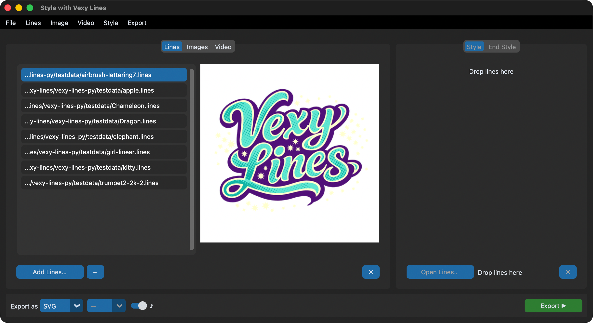

Vexy Lines for Mac & Windows | Download | Buy | Batch GUI | CLI/MCP | API | .lines format
vexy-lines-run¶
Drop images in. Pick a style. Get vector art out.

vexy-lines-run is a desktop batch GUI for Vexy Lines style transfer. Feed it images, .lines documents, or video. Choose an artistic style. Export as SVG, PNG, JPG, or MP4. Built on CustomTkinter — runs on macOS, Windows, and Linux.
Three tabs, one workflow¶
| Tab | Input | What happens |
|---|---|---|
| Lines | .lines files |
Re-export with a different style, or extract embedded previews |
| Images | PNG, JPG, WEBP, BMP, TIFF, GIF | Apply vector fill patterns through the MCP engine |
| Video | MP4, MOV, MKV, AVI, WEBM | Style transfer frame-by-frame with audio passthrough |
Pick a primary style from any .lines file. Optionally pick an end style — the app interpolates between them across the input sequence for smooth transitions.
What you get¶
- Style picker with live thumbnail previews
- Style interpolation — blend two styles across a batch or video
- Drag-and-drop onto any panel (
[dnd]extra) - Background export with a live progress bar and cancel button
- Output formats: SVG, PNG, JPG (1x–4x upscale), MP4, LINES
- Keyboard shortcuts — Cmd/Ctrl+O, Cmd/Ctrl+E, Escape
- Native menu bar (
[menus]extra) - Dark mode follows your system appearance
Quick start¶
macOS¶
Open Terminal, paste, press Enter:
curl -LsSf https://astral.sh/uv/install.sh | sh && export PATH="$HOME/.local/bin:$PATH" && uvx --python 3.12 vexy-lines-run
Windows¶
Open Command Prompt, paste, press Enter:
powershell -ExecutionPolicy ByPass -c "irm https://astral.sh/uv/install.ps1 | iex; $env:Path = \"$HOME\.local\bin;$HOME\AppData\Roaming\uv;$env:Path\"; uvx --python 3.12 vexy-lines-run"
From Python¶
from vexy_lines_run import launch
launch()
Next steps¶
- Installation — extras, platform notes, dev setup
- GUI Guide — what every button does, with screenshots
- Examples — real workflows, step by step
- API Reference — Python API for App, processing, video, and widgets
- Changelog — release history